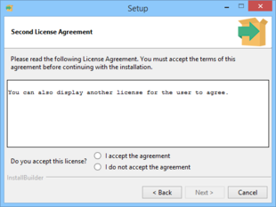
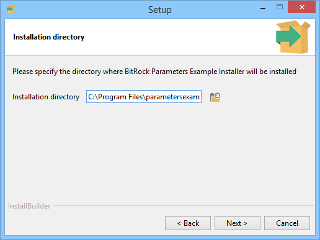
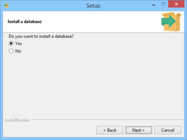
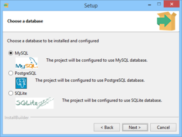
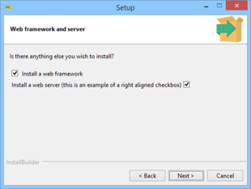
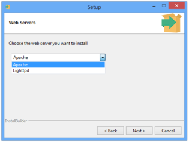
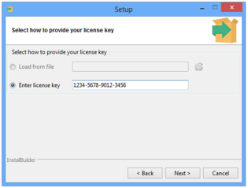
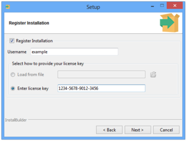

| 2. Installation and Getting Started | ||
|---|---|---|
| | ||
| 2. Installation and Getting Started | ||
|---|---|---|
| | ||
This section describes how to get up and running with InstallBuilder on a variety of platforms
You can download BitRock InstallBuilder from the BitRock website: installbuilder.bitrock.com. To start the installation process, double-click on the downloaded file.
You will be greeted by the Welcome screen shown in Figure 8:
Pressing Next will take you to the License Agreement page, shown in Figure 9. You need to accept the agreement to continue with the installation. The next step is to select the installation directory Figure 10. The default value is C:\Program Files\BitRock InstallBuilder\
The rest of this guide assumes you installed BitRock InstallBuilder in C:\Program Files\BitRock InstallBuilder\
You are now ready to start the installation process itself (Figure 11), which will take place once you press Next (Figure 12). When the installation completes, you will see the Installation Completed page shown in Figure 13. You may choose to view the README file at this point.
If you found a problem and could not complete the installation, please refer to the Troubleshooting section or contact us at support@bitrock.com. Please refer to the Support section for details on which information you should include with your request. |
The process for installing on Linux and other Unix platforms is similar. The rest of this section assumes you are running Linux. You can download the BitRock InstallBuilder binary from the BitRock website. It should have a name similar to installbuilder-professional-16.3.0-linux-installer.run. Make sure it has read and executable permissions by right clicking on the file, selecting "Properties" and then setting the appropriate permissions. Alternatively you can issue the following shell command:
$> chmod +x installbuilder-professional-16.3.0-linux-installer.run
You can now start the installation by double-clicking on the file from your Desktop environment or by invoking it directly from the command line with:
$> ./installbuilder-professional-16.3.0-linux-installer.run
You will be greeted by a Welcome screen if you are running in a Desktop environment or a text message (if no GUI mode is available).
The default value for installation will be a folder in your home directory if you are running the installer as a regular user (recommended) or /opt/installbuilder-16.3.0/ if you are running the installation as superuser (root).
The Mac OS X version of InstallBuilder is distributed as a zip file containing a .app that will be uncompressed automatically at download time by the browser. Alternatively you can uncompress it with:
$> unzip installbuilder-professional-16.3.0-osx-installer.app.zip
You can launch the application by double-clicking on it in Finder or from the command line with the following instruction
$> open installbuilder-professional-16.3.0-osx-installer.app
The InstallBuilder version you can download from installbuilder.bitrock.com is a fully functional evaluation version. It can only be used for a period of 30 days, and is intended for evaluation purposes only. It will add a reminder message to each installer ("Created with an evaluation version of BitRock InstallBuilder") which will disappear once you purchase and register a license.
There are two ways of registering your license with the product:
license.xml file to the directory where InstallBuilder was installed.
Sometimes you may need to specify a license at build time, instead of registering your copy of InstallBuilder. For example, this is necessary when you do not have write permissions for the InstallBuilder installation directory.
To do so, you can use the --license flag both with the GUI and command line builder.
$> builder build ~/project.xml --license ~/licenses/license.xml
$> builder --license ~/licenses/license.xml
The code above will launch the command line or GUI builder and all generated installers will be registered with the license ~/licenses/license.xml. If the GUI builder is closed and then reopened without specifying the --license flag, the generated installers will use a previously registered license. If no license is registered or an incorrect one is provided, the message Built with an evaluation version of InstallBuilder will be displayed while building. A similar message will also be displayed in the Welcome page of the generated installers.
On certain Windows versions, especially those that are UAC-enabled such as Vista and Windows 7, regular users cannot write to the default installation directory of InstallBuilder under c:\Program Files. When registering a new license, the builder will try first to write it to the main installation directory. If it is not writable, it will be placed in the user’s personal folder.
When the builder is launched, it will try to load the license from the user’s personal folder and if none is found, it will look for it in the installation directory.
This process allows multiple users to share the same installation of Installbuilder without interference, even if they do not have administrative rights. It also allow using different licenses for each user. The output directory follows a similar approach as explained in the "Directory structure" section.
The installation process will create several directories:
bin: BitRock InstallBuilder application binaries.
paks: Support files necessary for creating installers.
autoupdate: Support and binary files for the bundled automatic update tool.
projects: Project files for your installers. See note below for Windows Vista.
docs: Product documentation.
demo: Files for the sample demo project.
output: Generated installers. See note below for Windows Vista and Windows 7.
On Windows Vista and Windows 7, in line with the Application Development Requirements for User Account Control (UAC), the projects and output directories are installed under the user Documents folder, so usually they can be found at C:\Users\user\Documents\InstallBuilder\projects and C:\Users\user\Documents\InstallBuilder\output, respectively.
You are ready now to start the application and create your first installer, as described in the next section "Building your First Installer".
This section explains how to create your first installer in a few simple steps.
If you are running Gnome or KDE and performed the installation as a regular user, a shortcut was created on your Desktop. You can either start BitRock InstallBuilder by double-clicking on it or by invoking the binary from the command line:
$> /home/user/installbuilder-16.3.0/bin/builder
If you are running Windows, the installer created the appropriate Start Menu entries. Additionally, a shortcut was placed on your Desktop. Please refer to the Using the Command Line Interface section later in the document for more information on building installers from the command line.
The initial screen will appear (Figure 14). Press the "New Project" button or select that option from the File menu on the top left corner. A pop-up Window will appear, asking you for four pieces of information:
The rest of this tutorial assumes you kept the default values: "Sample Project", "sample", "1.0" and "Name of your Company".
Once you enter the information, the "Basic settings screen" (Figure 15) will be shown. Here you can specify additional settings:
If you do not want to display a license agreement or a README file during installation, you can leave those fields blank.
The next step is to click on the "Files" icon, which will lead to the screen shown in Figure 16.
The "Program Files" folder represents the target installation directory. You can add files and directories to this folder by selecting the "Program Files" folder and using the "Add File" and "Add Directory Tree" buttons. You can add multiple files by pressing down the Control key and clicking on them in the File selection dialog. Multiple selection is not available for directories at this time. The selected files and directories will be copied to the destination the user chooses during installation. If a folder only supports a particular target platform, such as Linux, it will only be included in installers for that particular platform.
Most applications only install files under the main installation directory ("Program Files" folder in the Files screen). It is possible, however, to add additional folders to copy files and directories to, such as /usr/bin or /etc/ by pressing the "Add Destination Folder" button in the Files screen. If you need special permissions to write to the destination folders, you may need to require installation by root (see "Customization of the installer" below).
Shortcuts can also be added to folders or the component. Depending on where it is added, it will be created in different places. For example, if a shortcut is added to a folder, it will be created in the destination of that folder. If the shortcuts are added to the Desktop or the Start Menu sections of the component they will be created in those locations (if applicable, Start Menu shortcuts are just created on Windows).
Please refer to the "Menus and Shortcuts" section to find additional information.
You can add logic to the installer, such as asking for information from the end user, creating users or writing some information to the registry. The Advanced section allows managing both custom pages and actions.
In most cases, a <initializationActionList> or <preInstallationActionList> element is used to perform a first validation of the system, such as checking for previous installations or enough disk space and the <postInstallationActionList>, executed after the unpack process, is used to perform actions with the installed files. For example, tasks such as changing permissions or starting a bundled Apache server would be performed after your software is installed. You can get a comprehensive list of available actions in the Actions appendix. A listing of all available points during the installation process in which these actions will be executed can be found in the Action Lists section.
With regards to getting information from the end user such as the installation directory, ports or passwords, the User Input and Pages sections include countless examples of how to retrieve all of the information required and how to properly create complex layouts.
In some cases it is desirable to prevent your users from installing your software without providing a previously purchased license key. The example below explains how to create a custom license key page and how to validate its input:
<project>
...
<!-- Component bundling the validator -->
<componentList>
<component>
<name>tools</name>
<folderList>
<folder>
<name>license</name>
<destination>${installdir}</destination>
<distributionFileList>
<distributionFile origin="/path/to/validator.exe"/>
</distributionFileList>
</folder>
</folderList>
</component>
</componentList>
...
<parameterList>
...
<!-- License key page -->
<parameterGroup>
<name>licensekey</name>
<title>License Key</title>
<explanation>Please enter your registration key</explanation>
<value></value>
<default></default>
<orientation>horizontal</orientation>
<parameterList>
<!-- A stringParameter for each field. We include a "-" as description to simulate the license-type format -->
<stringParameter name="field1" description="" allowEmptyValue="0" width="4"/>
<stringParameter name="field2" description="-" allowEmptyValue="0" width="4"/>
<stringParameter name="field3" description="-" allowEmptyValue="0" width="4"/>
<stringParameter name="field4" description="-" allowEmptyValue="0" width="4"/>
</parameterList>
<validationActionList>
<!-- Check all the fields have the appropriate length -->
<foreach variables="field">
<values>"${field1}" "${field2}" "${field3}" "${field4}"</values>
<actionList>
<throwError>
<text>${field}: Field should be four digits length</text>
<ruleList>
<compareTextLength text="${field}" logic="equals" length="4" negate="1"/>
</ruleList>
</throwError>
<throwError>
<text>${field}: Should be a pure digit string</text>
<ruleList>
<stringTest text="${field}" type="digit" negate="1"/>
</ruleList>
</throwError>
</actionList>
</foreach>
<!-- Join all the fields to create the license number -->
<setInstallerVariable name="normalizedkey" value="${field1}${field2}${field3}${field4}"/>
<!-- Unpack a bundled validator program and check if the license is correct -->
<unpackFile>
<destination>${system_temp_directory}</destination>
<component>tools</component>
<folder>license</folder>
<origin>validator.exe</origin>
</unpackFile>
<runProgram>
<program>${system_temp_directory}/validator.exe</program>
<programArguments>${normalizedkey}</programArguments>
</runProgram>
<throwError text="Wrong license key, please enter a valid one">
<ruleList>
<compareText text="${program_stdout}" logic="equals" value="1"/>
</ruleList>
</throwError>
</validationActionList>
<ruleList>
<compareText text="${installer_ui}" logic="equals" value="gui"/>
</ruleList>
</parameterGroup>
...
</parameterList>
...
</project>Please note that this layout won’t be properly displayed in text mode so the example hides the page if the ${installer_ui} is not gui (see Installation Modes for additional details). If you plan to support it, you should create an additional simplified page to be displayed in text mode:
<stringParameter>
<name>licensekeytext</name>
<title>License Key</title>
<description>Please introduce your registration key:</description>
<validationActionList>
...
</validationActionList>
<ruleList>
<compareText text="${installer_ui}" logic="equals" value="text"/>
</ruleList>
</stringParameter>In the example, the validation code makes use of an external tool to validate the license. If you do not have any tool, you could implement an algorithm in your XML code to validate it. A very simple validation would be to check that:
${field1}+${field3}==${field2}+${field4}<validationActionList>
<mathExpression>
<text>${field1}+${field3}</text>
<variable>sum1</variable>
</mathExpression>
<setInstallerVariableFromRegEx>
<name>trimmedSum1</name>
<pattern>.*(\d{4})$</pattern>
<substitution>\1</substitution>
<text>${sum1}</text>
</setInstallerVariableFromRegEx>
<mathExpression>
<text>${field2}+${field4}</text>
<variable>sum2</variable>
</mathExpression>
<setInstallerVariableFromRegEx>
<name>trimmedSum2</name>
<pattern>.*(\d{4})$</pattern>
<substitution>\1</substitution>
<text>${sum2}</text>
</setInstallerVariableFromRegEx>
<throwError>
<text>Invalid License or License Count Exceeded</text>
<ruleList>
<compareValues>
<logic>does_not_equal</logic>
<value1>${trimmedSum2}</value1>
<value2>${trimmedSum1}</value2>
</compareValues>
</ruleList>
</throwError>
</validationActionList>Please note this is a very simple algorithm. If you plan to use this in your installer you can create more complex checks using <setInstallerVariableFromRegEx> and <md5> actions.
Another option is to send the provided license key to your server to validate:
<validationActionList>
<httpPost>
<filename>${system_temp_directory}/post_result</filename>
<url>http://www.example.com/validate.php</url>
<queryParameterList>
<queryParameter name="key" value="${normalizedkey}"/>
</queryParameterList>
</httpPost>
<md5>
<text>${normalizedkey}+secretKey</text>
<variable>expected</variable>
</md5>
<readFile name="result" path="${system_temp_directory}/post_result"/>
<throwError text="Invalid License or License Count Exceeded">
<ruleList>
<compareText>
<logic>does_not_contain</logic>
<text>${result}</text>
<value>${expected}</value>
</compareText>
</ruleList>
</throwError>
<deleteFile path="${system_temp_directory}/post_result"/>
</validationActionList>You can also send additional information, such as a required username and password so you can track which user is providing the license key. The drawback of using this approach is that it requires an Internet connection.
On the Customization (Figure 17) and the Packaging screens, you can change the default installation settings to match your needs:
User Interface Settings
Installer Settings
It is recommended that instead of using the above settings, you use the equivalent action lists, such as <postInstallationActionList> and <preUninstallationActionList>.
Permissions
Please note that these options only take effect when creating installers for Unix platforms from Windows.
Check the Customization section for an in-depth customization guide.
All of these project-level configuration settings can be customized based on the platform using the <platformOptionsList> tag:
<platformOptionsList>
<platformOptions>
<platform>linux</platform>
<leftImage>images/abc_linux_left.png</leftImage>
<height>400</height>
</platformOptions>
<platformOptions>
<postInstallationScript>${installdir}/linux-x64-script.sh</postInstallationScript>
<platform>linux-x64</platform>
</platformOptions>
<platformOptions>
<platform>solaris-sparc</platform>
<leftImage>images/abc_solaris_sparc_left.png</leftImage>
</platformOptions>
<platformOptions>
<platform>solaris-intel</platform>
<leftImage>images/abc_solaris_intel_left.png</leftImage>
</platformOptions>
<platformOptions>
<platform>windows</platform>
<leftImage>images/abc_left.png</leftImage>
</platformOptions>
<platformOptions>
<platform>osx</platform>
<leftImage>images/abc_osx_left.png</leftImage>
<height>500</height>
</platformOptions>
</platformOptionsList>You can now build the installer by pressing the "Build" button. This will take you to the Packaging screen and start the installer building process, as shown in Figure 18. If the build process succeeds, an installer named sample-1.0-linux-installer.run will be placed at the output directory (C:\Users\user\Documents\InstallBuilder\projects under Windows Vista and Windows 7, as explained earlier). If you are building a Windows installer, the file will be named sample-1.0-windows-installer.exe. If you are building a Mac OS X installer, its name will be sample-1.0-osx-installer.app. The Mac OS X installer binary will need to be packaged inside an archive file or disk image. If any problem is found, such as a file not being readable, a message will be displayed in red and the build will stop.
You can test the generated installer by pressing the "Test Run" button, as seen in Figure 19.
| What is the difference between Full Build and Quick build? | |
|---|---|
Creating an installer can take a long time if your product is hundreds of megabytes in size. You can use the Quick Build button to avoid rebuilding an installer from scratch if you are just making changes to installer-specific settings, such as license and readme files, the default installation path or logo image. It will also do incremental packaging of files that have been added or removed. This incremental package will increase the size of the installer, so it is recommended that you do a full build after development of the installer has completed and before release. |
You can customize additional installer functionality as explained in the Advanced Functionality section.
It is possible to select a CDROM build target. In this case, a directory including a folder with common installer files and a setup file for each one of the supported architectures is created. This allows you to provide a single CDROM for all platforms, avoiding duplication of data.
This method is also the recommended approach for installers above 1GB, especially on Windows, where the UAC mechanism tries to copy the full installer to the %TEMP% folder before launching it, which results in very high delays when starting the installer. Another known issue on Windows is that executables above 1GB do not show their icons.
Using the cdrom-type build will create a set of lightweight installers for the configured platforms and the packed files separately.
To build a CDROM installer you just have to select Multiplatform CDROM as Build Platform in the Packaging screen when using the GUI mode or just provide cdrom as the target in the command line interface:
$> bin/builder build project.xml cdrom
InstallBuilder will then generate a set of folders, each of them containing the files to be burned in the CDROM disk. For example, for a 4 disk installer you will get:
$> ls output/ sample-1.0-cdrom sample-1.0-cdrom.1 sample-1.0-cdrom.2 sample-1.0-cdrom.3
Where the name of the folders is defined through the <cdromDirectory> project property. The first disk is contained in the folder named sample-1.0-cdrom and, apart from the packed files, it will contain the installers for the different platforms. The other folders will just contain the rest of the files to install. When installing the generated multidisk installer, InstallBuilder will automatically ask for the next disk when needed.
A CDROM build is configured through the below project properties:
<cdromFirstDiskSize>: The size (in bytes) of the first CDROM (default value: 650000000). This tag will allow you to reserve some space in the first disk to include presentations, images or video tutorials without affecting the size of the rest of the disks. If you don’t need this extra space in the first disk you can just set it to the same value as the <cdromDiskSize> property.
<cdromDiskSize>: The size (in bytes) of the remaining CDROMS (default value: 700000000)
<cdromPlatforms>: Space-separated list of platforms that the CDROM installer will support. A launcher binary will be added in the first disk for each of these platforms.
<cdromDirectory>: Name of the directory that will contain the CDROM files created by the build process (defaults to ${project.shortName}-${project.version}-cdrom)
<compressPackedFiles>: Compress files as if they were being packed into the installer file (defaults to 0). Setting this option to true results in the creation of a dist file that has packed all the files inside it. It usually achieves better compression rates.
| Creating DVD disks | |
|---|---|
In case of DVD disks, the appropriate values for the <project> ... <cdromFirstDiskSize>4650000000</cdromFirstDiskSize> <cdromDiskSize>4700000000</cdromDiskSize> ... </project> |
| Distributing big installers in other media formats | |
|---|---|
If your product is distributed in other media formats such as a USB drive or SD card you can still use the CDROM-type build. You just need to set a In the case of a USB bundling your 10GB of files: <project> ... <cdromFirstDiskSize>20000000000</cdromFirstDiskSize> ... </project> |
A common error while testing the multidisk installers is not being able to detect the next disk when the installer requests it. To understand why this happens, it is important to understand how InstallBuilder detects that the inserted disk is valid:
1) When the unpack process starts, InstallBuilder looks for the dist file (or folder depending on the value of the <compressPackedFiles> property) in its parent directory and starts unpacking the files
2) When InstallBuilder finds a file that requires a new disk during the unpack process, a dialog prompts for it.
3) After the new disk is inserted and the user accepts the dialog, InstallBuilder looks for a dist file in the same location of the previous one. If InstallBuilder cannot find it, it will report that the disk is incorrect and will ask again for the disk.
The most common mistake in this step is to rename the dist or to move it to another directory in the new disk.
4) If the dist file is correctly placed and InstallBuilder finds it, it will then look for the next file to unpack. If the dist file does not contain the requested file, InstallBuilder will report that it cannot find the disk as in the previous step.
This error may occur because the wrong disk number was inserted. If this is not the case and you are not using <compressPackedFiles>1</compressPackedFiles>, the filenames inside the dist folder may have been shortened by the burning software. For example, a Joilet file system will only allow you to write up to 64 characters filenames. Using <compressPackedFiles>1</compressPackedFiles> or properly burning the disk to allow long filenames will solve the problem.
5) Once the new file is found, the installation process continues, requesting a new disk if necessary.
InstallBuilder provides several sample projects to help you get started with building your installer.
The welcome screen in the InstallBuilder GUI shows a list of the available projects. These projects will be automatically loaded when clicked:
Each of these projects can be opened, built and tested without applying any changes. You can also try modifying them to see how the solutions shown in the examples can be reworked to suit your product’s needs.
This project provides a simple, ready to use installer that will:
The demo project includes files for multiple platforms. Depending on the platform built, it will pack different sets of files.
This project demonstrates how components and component groups can be used to package a complex application. It demonstrates how component groups can be used to organize common files and functionality. Deselecting or selecting the parent parameter group will also affect the installation of its child components.
The project will help you to understand how parent and child components interact. Selecting the Text Editor component will cause some of its child components (Printing support by default) to be installed while Slides and Presentations will enable Printing support and Projector support by default.
Deselecting Import / Export filters causes all of its children to automatically be deselected. Selecting Import / Export filters again will cause the selection status of XML / XSLT filters and Other filters to be restored.
Additional details regarding components and child components can be found in the component groups section of the documentation.
This example project also shows how downloadable components work and how to implement more advanced functionality such as mirror selection for downloads. Several components are marked as component.downloadable, which means that they will be created as separate files when built with the downloadable components flag enabled.
More information about creating installers with downloadable components can be found in downloadable components section of the manual.
| Downloadable components and being able to run the installer | |
|---|---|
When building the project with the downloadable components option enabled during build, the installer will try to download the created components from In order to test that the downloadable components functionality is working, copy the generated packages from
|
This project shows what types of parameters are available and how you can use them to retrieve information from the user.
It explains how to combine them using parameter groups to create more complex GUIs.
The rest of the section provides examples of the available parameters, including their XML code and how they look in the GUI:
| Additional license dialog | |
|---|---|
|
 |
<licenseParameter>
<title>Second License Agreement</title>
<name>other_license</name>
<file>docs/otherLicense.txt</file>
<wrapText>1</wrapText>
</licenseParameter> |
| Show a text and image with a <labelParameter> | |
|---|---|
 |
<labelParameter>
<name>non_linux_user</name>
<title>Introduction</title>
<description>Dear ${platform_name} user, you'll now try an example installer that
will display to you examples of the InstallBuilder parameters functionality.</description>
<image>img/icon.png</image>
</labelParameter> |
| Installation directory selection with a <directoryParameter> | |
|---|---|
|
 |
<directoryParameter>
<name>installdir</name>
<description>Installation directory</description>
<explanation>Please specify the directory where
${project.fullName} will be installed</explanation>
<insertAfter>welcome_label</insertAfter>
<default>${platform_install_prefix}/${project.shortName}-${project.version}</default>
<cliOptionName>prefix</cliOptionName>
<mustBeWritable>yes</mustBeWritable>
<mustExist>0</mustExist>
</directoryParameter> |
| Group multiple fields using a <parameterGroup> | |
|---|---|
 |
<parameterGroup>
<name>user_data</name>
<title>User data</title>
<explanation>Please insert the desired username and password</explanation>
<parameterList>
<stringParameter>
<name>username</name>
<description>User Name</description>
<value>admin</value>
<allowEmptyValue>0</allowEmptyValue>
</stringParameter>
<passwordParameter>
<name>userpasswd</name>
<title>User Password</title>
<description>Password</description>
<descriptionRetype>Re-enter</descriptionRetype>
<!-- throw an error if password is empty -->
<validationActionList>
<throwError>
<text>You need to provide a non-empty password</text>
<ruleList>
<compareText text="${userpasswd}"
logic="equals" value="" />
</ruleList>
</throwError>
</validationActionList>
</passwordParameter>
</parameterList>
</parameterGroup> |
| Ask if a database should be installed with a <booleanParameter> | |
|---|---|
|
 |
<booleanParameter> <name>install_db</name> <title>Install a database</title> <description>Do you want to install a database?</description> <default>1</default> </booleanParameter> |
| Select the preferred database using radiobuttons | |
|---|---|
|
 |
<choiceParameter>
<name>preferred_database</name>
<title>Choose a database</title>
<explanation>Choose a database to be installed
and configured</explanation>
<default>mysql</default>
<cliOptionName>${project.shortName}_database</cliOptionName>
<displayType>radiobuttons</displayType>
<optionList>
<option>
<text>MySQL</text>
<image>img/mysql.png</image>
<value>mysql</value>
<description>The project will be configured
to use MySQL database.</description>
</option>
<option>
<text>PostgreSQL</text>
<image>img/postgres.png</image>
<value>postgres</value>
<description>The project will be configured
to use PostgreSQL database.</description>
</option>
<option>
<text>SQLite</text>
<image>img/sqlite.png</image>
<value>sqlite</value>
<description>The project will be configured
to use SQLite database.</description>
</option>
</optionList>
</choiceParameter> |
| Multiple <booleanParameter> parameters in a <parameterGroup> | |
|---|---|
|
 |
<parameterGroup>
<name>apps_and_server</name>
<title>Web framework and server</title>
<explanation>Is there anything else you wish to install?</explanation>
<parameterList>
<booleanParameter>
<name>install_webframework</name>
<value>1</value>
<description>Install a web framework</description>
<displayStyle>checkbox-left</displayStyle>
</booleanParameter>
<booleanParameter>
<name>install_server</name>
<value>1</value>
<description>Install a web server (this is an example of a
right aligned checkbox)</description>
<displayStyle>checkbox-right</displayStyle>
</booleanParameter>
</parameterList>
</parameterGroup> |
| Choose the preferred framework using radiobuttons | |
|---|---|
 |
<choiceParameter>
<name>preferred_apps</name>
<title>Web Frameworks</title>
<explanation>Choose the web frameworks you want to install</explanation>
<default>django</default>
<cliOptionName>${project.shortName}_apps</cliOptionName>
<displayType>radiobuttons</displayType>
<optionList>
<option>
<text>Django</text>
<value>django</value>
<description>A web framework for Python.</description>
</option>
<option>
<text>Ruby on Rails</text>
<value>ror</value>
<description>The famous web framework for Ruby.</description>
</option>
<option>
<text>Cake</text>
<value>cake</value>
<description>A web framework
for PHP.</description>
</option>
</optionList>
<ruleList>
<compareValues>
<value1>${install_webframework}</value1>
<logic>equals</logic>
<value2>1</value2>
</compareValues>
</ruleList>
</choiceParameter> |
| Choose between multiple web server using a combobox | |
|---|---|
|
 |
<choiceParameter>
<name>preferred_server</name>
<title>Web Servers</title>
<explanation>Choose the web server you want to install </explanation>
<default>apache</default>
<cliOptionName>${project.shortName}_server</cliOptionName>
<displayType>combobox</displayType>
<optionList>
<option>
<text>Apache</text>
<value>apache</value>
</option>
<option>
<text>Lighttpd</text>
<value>light</value>
</option>
</optionList>
</choiceParameter> |
| Choose a file using a <fileParameter> | |
|---|---|
 |
<fileParameter> <name>chooseAFile</name> <title>Configuration File</title> <explanation>Please include a file</explanation> <mustExist>1</mustExist> </fileParameter> |
| Using a <booleanParameterGroup> to show optional configuration options | |
|---|---|
 |
<booleanParameterGroup>
<name>advanced</name>
<description>Advanced Mode</description>
<parameterList>
<choiceParameter>
<name>emailNotifications</name>
<description>Email notifications</description>
<value>always</value>
<allowEmptyValue>1</allowEmptyValue>
<displayType>combobox</displayType>
<ordering>default</ordering>
<width>40</width>
<optionList>
<option description="Always send notifications"
text="Always" value="always" />
<option description="Never send notifications"
text="Never" value="never" />
</optionList>
</choiceParameter>
<stringParameter name="subject"
description="Notifications Subject"
value="[NOTIFICATION] #" />
<directoryParameter name="cacheDir"
description="Cache Dir"
value="${system_temp_directory}/cache" />
</parameterList>
</booleanParameterGroup> |
| Using a <choiceParameterGroup> to show multiple options for registration | |
|---|---|
|
 |
<choiceParameterGroup>
<name>keyChoice</name>
<description>Select how to provide your license key </description>
<parameterList>
<fileParameter
name="keyFile"
description="Load from file"/>
<stringParameter
name="licenseText"
description="Enter license key"/>
</parameterList>
</choiceParameterGroup> |
| <booleanParameterGroup> page with embedded <choiceParameterGroup> | |
|---|---|
|
 |
<booleanParameterGroup>
<name>registerNested</name>
<description>Register Installation</description>
<value>1</value>
<validationType>ifSelected</validationType>
<parameterList>
<stringParameter>
<name>registerUser</name>
<description>Username</description>
</stringParameter>
<choiceParameterGroup>
<name>registerKeyChoice</name>
<description>Select how to provide your license key</description>
<parameterList>
<fileParameter
name="registerKeyFile"
description="Load from file"/>
<stringParameter
name="registerLicenseText"
description="Enter license key"/>
</parameterList>
</choiceParameterGroup>
</parameterList>
</booleanParameterGroup> |
| Show multiple lines of text with an <infoParameter> | |
|---|---|
 |
<infoParameter> <name>final_review</name> <title>Almost done</title> <value>These were some examples of what parameters in InstallBuilder allow you to do in a simple and intuitive way. After the installation there will be more examples of parameters.</value> </infoParameter> |
| Show a clickable link using a <linkParameter> | |
|---|---|
|
|
<linkParameter>
<name>open_browser</name>
<title>Open Browser</title>
<explanation>You can also add parameters to be shown after the installation is complete.
Here's a link parameter:</explanation>
<insertAfter>installation</insertAfter>
<clickedActionList>
<launchBrowser>
<url>http://www.bitrock.com</url>
</launchBrowser>
</clickedActionList>
<description>Open BitRock Website</description>
</linkParameter> |
This project shows when actions are run during build, before, during and after the installation, uninstallation and actions related to parameters.
Actions run during various stages of installation and uninstallation and can be set for both project and its individual components.
More information about when certain actions are run and their execution order can be found in the action list section.
This is a basic project with multiple components and shows how components can be put in separate files.
It shows how the <include> tag can be used to extract components into external files, which can be reused in multiple projects. You can use this approach to create reusable features such as Apache, MySQL or Tomcat and use them as construction blocks in your projects.
You can find more information about the <include> directive in the adding components from external files section.
In addition to the current document, you can find additional information regarding developing with InstallBuilder in the following resources:
InstallBuilder.rng) is bundled in the docs directory. It can be used with code editors to validate the code being written.
http://installbuilder.bitrock.com/contact-support.html or email us at support@bitrock.com
| | ||
| 1. Introduction to InstallBuilder | 3. Architecture |